2
Creating Rows
Advanced node processes support multiple grid types. As a result, advanced node designs easily adapt to a row-based placement methodology. Though it is not necessary that you create rows for placement, it is recommended because row-based placement improves routability, achieves better wire length after routing, and resolves illegal placements by balancing the number of instances placed in each row. It also helps resolve overlaps between devices in each row.
The Row Template Manager feature provides the capability to define row templates. You can create row templates specific to your design type, and then use these templates to generate rows in the layout canvas. Rows are created in objects called row regions. Row regions reference a row template that determines how rows are created in that region. Rows, in turn, contain component type attributes that determine which instances are placed in that row and the manner in which they are placed.
You can save row templates and reuse them in multiple designs. Row templates can be used to place both analog and digital designs.
This chapter gives a brief introduction about rows and row templates; and describes the procedure to use the Row Template Manager to create, edit, and import row templates.
The topics covered in this chapter are:
Introducing the Row Infrastructure
A row represents the location for placing standard cells, macros, or devices. In a layout design, you define rows within the PR boundary. You can then place instances within these rows.
Row Attributes
The following diagram depicts a row and its attributes:
Row Templates
A row template is a container that defines one or more rows. It comprises specifications for a set of rows to be generated in the layout canvas. A row template can be repeated multiple times, one on top of the other, based on the required height. The following diagram depicts how a row template can be used multiple times in a design. One instance is zoomed in to view details:
In the above diagram, you can see that:
- The row template period is the total height of the row template, inclusive of all the rows in it.
- Each row has a different row offset value.
Here is a snapshot of a row template with three rows, Row 1, Row 2, and Row 3:
Before generating rows in the layout canvas using a row template, ensure that:
- The row template has at least one row.
- All rows have either a row height or a siteDef valued defined.
- All rows fit inside the template period.
- All row have an allowed orientation value set.
- All rows have either a component type or a component master filter, but not both.
- All attributes are specified for generating rails, if required.
Row Template Manager
Before running Virtuoso Placer, you must have generated rows in the layout canvas.
Row generation involves the following steps:
-
Defining one or more row templates: Use the Row Template Manager to define row templates.
Row templates will typically be set up centrally for use with a particular project or process node and it's unlikely that the layout designer will have to edit them.
The Placement Planning form includes the Row Template field. This section covers the process of defining and generating rows using the Row Template Manager. -
Defining the area where rows should be generated: Use the Region tab of the Placement Planning form to specify the area (Boundary) in which the rows must be generated.
Depending on the area, which could be the PR boundary or a custom placement area, row templates are repeated to accommodate as many rows as possible within the area.
When you select a row template, the Row tab is automatically disabled. You cannot edit row attributes.
If you do not select a row template, you can use the options on the Row tab to define row attributes, as shown in the following picture:
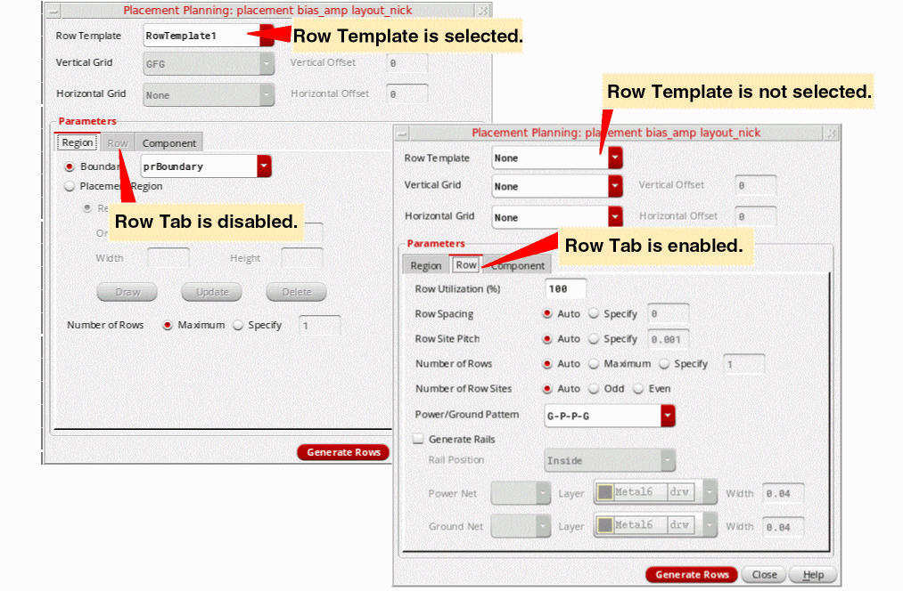
Click Generate Rows to generate rows in the layout canvas as per the specifications in the Placement Planning form.
For more information, see
Creating and Editing a Row Template
Use the Row Template Manager to create and edit row templates. Click Place – Row Template Manager to display Row Template Manager.
- Edit: Use this tab to create new row templates or to edit existing templates. Row templates are stored directly in the layout.
- Import: Use this tab to import existing row templates from a different cellview in your design library. The Import tab is displayed by default when you open the Row Template Editor. Once a template is defined, you can reuse it any number of times. Use the options on the Edit tab to make further changes to an imported row template. For more information, see Importing a Row Template from Another Cellview.
The tasks involved in creating a new row template are:
Defining Row Template Name and Placement Grid
With the Row Template Manager open:
- Click the Edit tab.
-
Click New to generate a new unique row template name, which, by default, is RowTemplateN, where N = 1, 2, 3, … You can modify this default value to specify a more descriptive name for your row template.
-
Specify the row Template Period. It is the sum of the heights of all rows in the template and the spacing between these rows. In other words, it is the distance after which the template repeats.
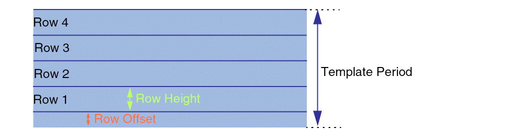The combo box beside the Template Period field specifies the number of rows that can be accommodated in the specified row template period. If you modify the number, then the Template Period is adjusted accordingly. For example,4*0.048indicates that the Template Period is four times the vertical grid's period (0.048). Therefore, the Template Period field is automatically reset to0.192to accommodate the vertical grid. - Specify the Region Type, which is a RowRegionSpec (RRS) type attribute from which settings are inherited. After generating the row region in the layout canvas, Virtuoso can automatically query the RowRegionSpec type attribute, derive the predefined actions, and run these actions on the new row region.
-
The Placement Grid section ensures that row placement is compatible with the Width Spacing Pattern/Snap Pattern (WSP/SP) tracks. In this section:
- Optionally, select the vertical and horizontal reference grids (along the x and y axes) for snapping the devices during placement.
- Optionally, specify the vertical and horizontal offset values, which indicate the reference row offset values that need to be applied to rows on each axis after they are snapped to the reference grids. The offset value is a correction factor for the SP.
- Optionally, select a Related Snap Pattern, which is a predefined grouping of snap pattern definitions (SPDef) and width spacing snap pattern definitions (WSSPDef). If you choose a Related Snap Pattern, a corresponding WSP region that is equivalent to and in addition to the row region is created.
Defining a Row
Use the Rows section to specify row parameters. The Row Information table initially has a placeholder for the first row. When you edit the row, a placeholder for the next row is automatically added. This way, you can create a list of rows to be included in the row template. You can also right-click a row to display the following shortcut menu:
Select Auto-compute row offset to automatically calculate and update the row offsets whenever rows are modified, for example, when a row is added, duplicated, or deleted. The offsets of all rows in the template are re-calculated and updated such that they are next to each other, without any overlaps. The row offset calculation is also done when the row height or offset values are modified.
To specify the row parameters:
- After adding a row, edit its Row Name.
-
Row Offset, the offset from the base of the template, is initially set to
0for the first row. You can edit the value. Row offset values must be greater than or equal to zero and less than or equal to the template period.You must ensure that the Row Offset value adheres to the Template Period and Row Height values. An example of an error condition is given below.If Auto-compute row offset is selected, the row offset values are automatically adjusted such that rows are created next to each other, without any overlaps.
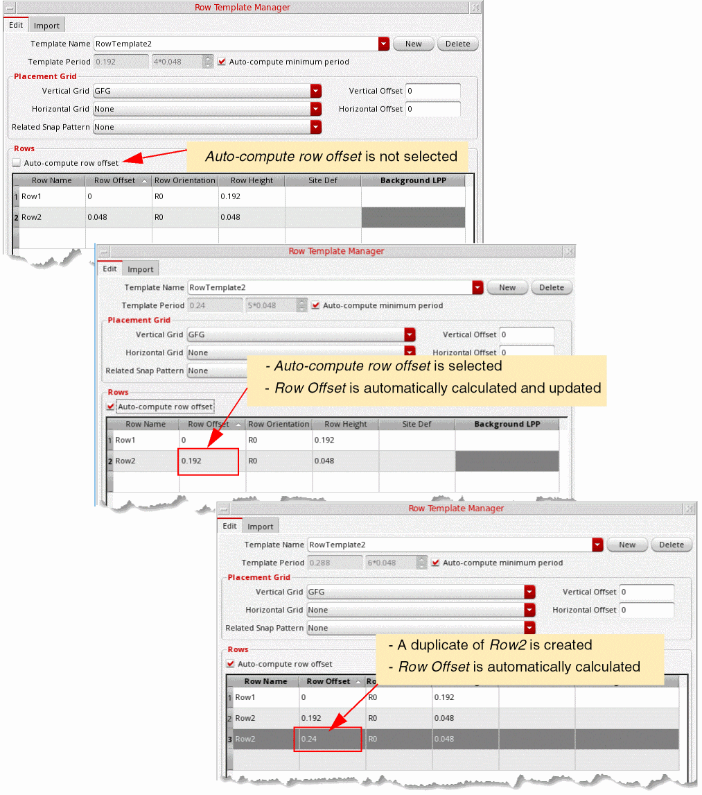 -
Row Orientation is the current orientation of the row. Valid orientations are
R0(default) andMX(Mirrored about the x axis). -
The Row Height value defaults to the period of the vertical grid or to
0if the vertical grid is not set. In the following example, the Template Period is set to0.192and the row template has a single row of height0.192:
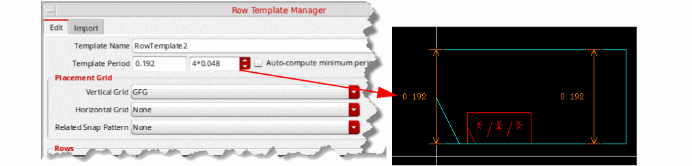On adding a new row to the above definition, the Template Period value is highlighted, indicating that the end of the row exceeds the Template Period value. Therefore, the row is partially or fully outside of the template.
In such situations, select the Auto compute minimum period to automatically calculate a minimum template period value.
The following figure depicts such a situation:
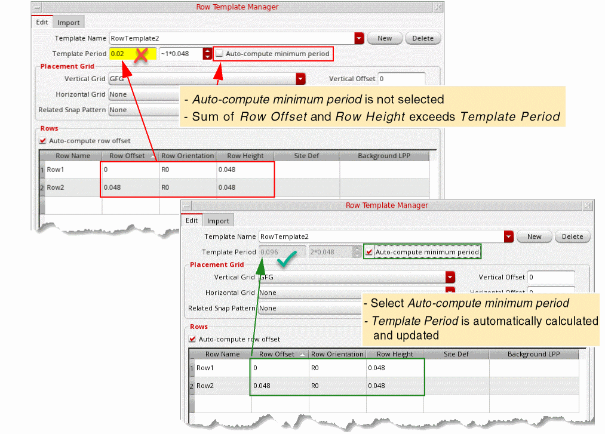 -
If you select a Site Def, then the specified Row Height is overridden by the row height value of the siteDef. The Inst Pitch value is also reset to the width of the siteDef, which you can further edit. Standard cells snap to the site defined in the siteDef.
The following pictures depict the differences between the siteDef height and row height values:
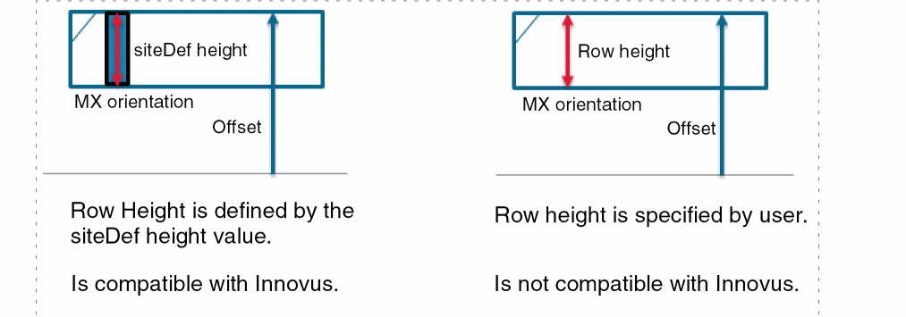 -
Select a Background LPP to fill the given row with a rectangle on the specified layer-purpose pair (LPP). This option is useful when you want to use well layers. You can use either an Nwell row with a Pwell behind it, or a Pwell row with an Nwell behind it. In the following example, an Nwell layer is selected as the Background LPP:
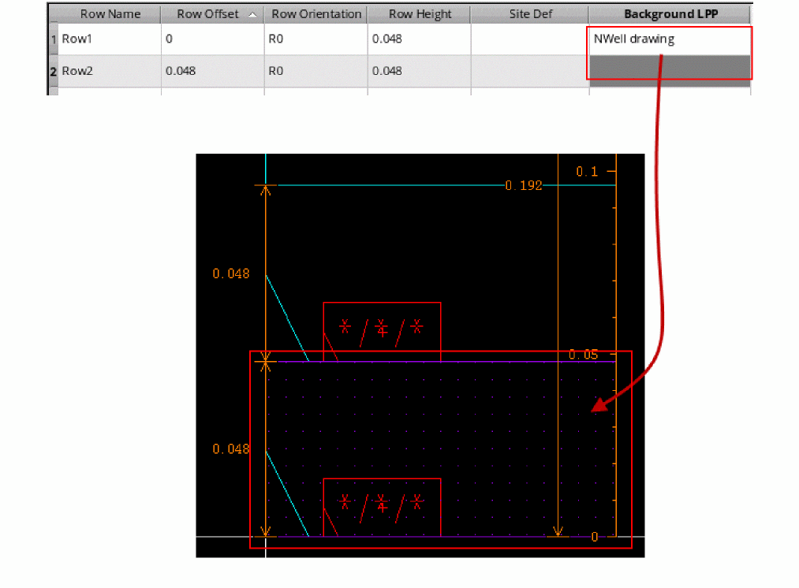A rectangle shape is created in the row, which can be used for placing wells.
Defining Component Types and Rails
Select a row to display its component attributes in the Row Attributes section. Use the options in this section to define the component types and rails.
-
In the Types field, specify the component types that can be placed in the row. These components are defined in the Configure Physical Hierarchy form. Click the Browse button to choose from a list of available component types.
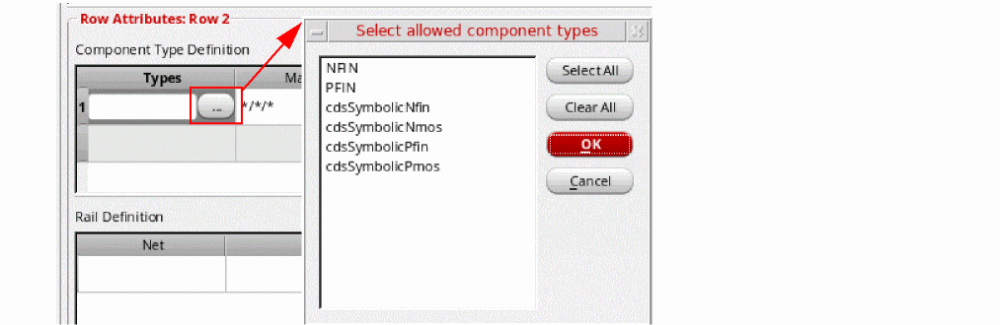 -
If you have not specified component types, specify the device Master. Only the devices belonging to the specified master can be placed in a row. You can specify either a single master cellview or only the
lib,cell, orviewvalue. For example, Master can be set to*/pfinFet/*for a p-type row or*/nfinFet/*for a n-type row. Default is*/*/*. -
Specify the component Orientation. This orientation is applied relative to the Row Orientation specified above. Therefore, if the row orientation is
R0, the component orientation is followed as specified. However, if the row orientation is set toMX(mirrored) and the component orientation is also set toMX, then the devices are flipped twice, and so the resulting orientation will beR0. Click the Browse button to select from the list of supported orientations.
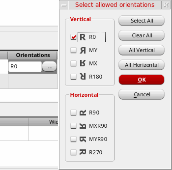 -
Choose an Align Reference, which specifies the row edge to which components need to be aligned. Valid values are
BOTTOM,TOP, andCENTER.
-
Specify an Align Offset value, which specifies the distance from the Align Reference edge that the components can be placed. In the following example, Align Reference is
BOTTOMand Align Offset is0.48. So, the component is placed at the specified distance from theBOTTOMedge.
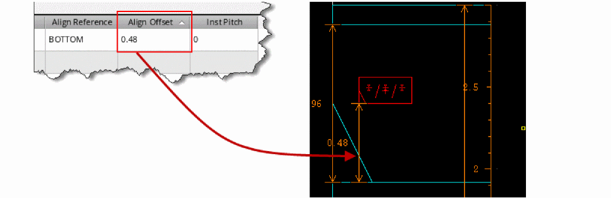 -
InstPitch specifies the minimum distance between instances of the same component in a row. If InstPitch is set to
0, then you can place two instances of the same component at any distance from each other. If you set InstPitch to any number greater than0, then the distance between instances must be a multiple of InstPitch. InstPitch can also be used to override the default snapping definitions. A reference grid is created based on the specified value, and instances are snapped to this new grid. For example, if InstPitch is set to1, then devices can snap by only one unit in the X-direction. - Use the options in the Rail Definition section to generate rails in the selected row. Specify the Net that defines the rail connectivity. Select the LPP on which the rail is drawn and specify the rail Width.
- WSP Track lists all WSP tracks available within the template period range. Choose a WSP track based on which the rail layer, width, and offset values must be set.
-
In the Align Reference field, specify the reference edge for aligning the rail in relation to the row. Valid values are
TOP,BOTTOM, andCENTER. -
Specify the Align Offset, which is the distance of the rail from the reference edge (Align Reference) specified above. Align Offset is automatically set to BOTTOM if a WSP track is selected.Depending on your need, you can sort rows based on their Rail Width, Align Reference, or Align Offset values.Here is a quick look at a design with rail definition: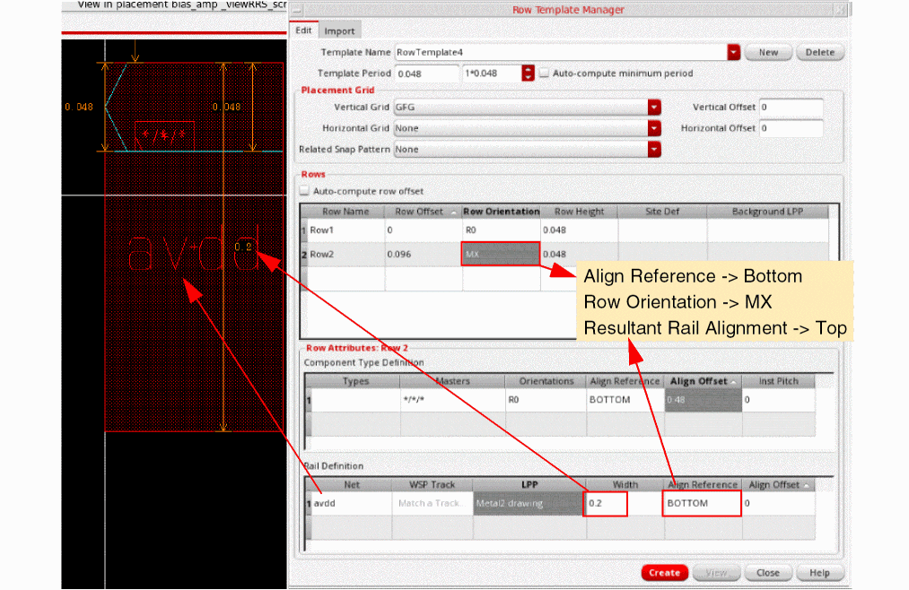
After creating row templates, use the
Importing a Row Template from Another Cellview
Once defined, a row template is a reusable object, which makes it possible for you to import a row template defined for one design to another similar design. You can also define a set of row templates that can be used in a variety of designs and include them in the design library.
Use the Import tab of the Row Template Manager to import row templates from a different cellview in your design library.
To import existing row templates:
-
Click Place – Row Template Manager to display the Row Template Manager.
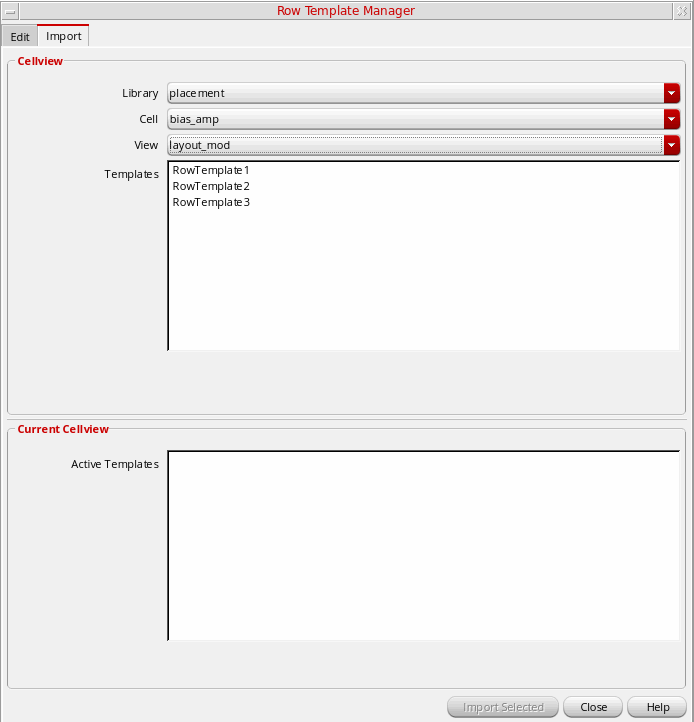 - Select the Import tab.
- Choose the Library, Cell, and View which contains the row template you want to import.
- Templates lists all row templates that are available in the specified cellview. Active Templates in the Current CellView section lists all active row templates in the current cellview. Choose the required row templates.
- Click Import Selected.
After importing templates, use the
Deleting a Row Template
- With the Edit tab open, choose the Template Name from the drop-down list.
-
Click Delete. The selected row template is deleted.
Layout Support for Row Regions
This section describes the areas which have been enhanced in the layout editor to support row regions.
Palette
Row regions can be selected from the Objects panel of the Palette. Only the selectability (S) option is supported for row regions, as shown in the figure below.
Property Editor
Similar to other shapes and objects, you can use the Edit Properties form or the Property Editor assistant to edit the properties of the row regions.
Row Region Attributes
Name displays the name of the row region.
Row Template lets you select the row template used to create the row region.
Points sets the coordinates each point of the row region.
Use Partial Row Template, if selected, the row region spec repeats partially till there is space to fill a whole row. If not selected, only a full row region spec is created. If the space remaining on the top is less than the height of a row region spec, it is left empty.
Dynamic Display
Dynamic measurement and info balloon also support row regions. You can select the parameters to include in the Info Balloon and Dynamic Measurement display in the Dynamic Display form, as shown in the figure below.
The figures below display the info balloon for the row regions.
The figure below displays the dynamic measurement for the row region object.
Show Selection Info Toolbar
The preselect and select information for row regions is displayed on the Show Selection Info toolbar, as shown in the figures below.
Summary Window
You can also view the row region statistics in the Summary window, as shown in the figure below.
Dynamic Selection Assistant
The Dynamic Selection assistant displays the row regions in a hierarchical manner. The properties of the row region and its subobjects are listed in the assistant, as shown in the figure below.
Editing Support for Row Regions
Row region objects can be edited like other shapes in the layout editor.
Some exceptions for a few commands are:
-
For the
Deletecommand, partial deletion (for example a vertex) is not supported. -
For the
RotateandChopcommand, only orthogonal editing is supported.
A context-sensitive menu is also available for row region objects. You can use the context-sensitive menu to access the commonly used editing commands.
Snap Pattern Snapping Support
Snap pattern snapping to the reference grids specified by the row region template is also supported. You can specify the reference grid for the horizontal or vertical direction. In the example below, the horizontal grid is set to M1WSP and the vertical grid is set to M2WSP, with offsets (0.04 and 0.05).
Importing Row Regions
The Replace Rows section of the Load Physical View form includes the Row Regions check box. When selected, the existing row regions in the target cellview are deleted and replaced with the row regions defined in the source cellview.
For more information, see
Return to top